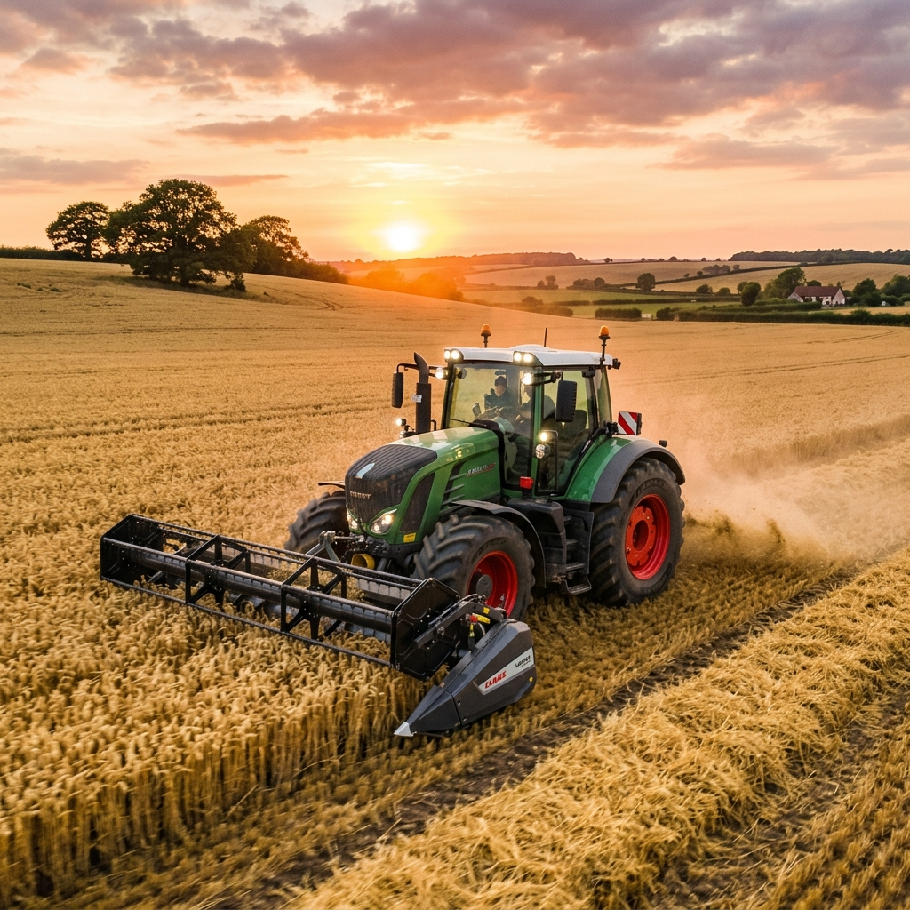
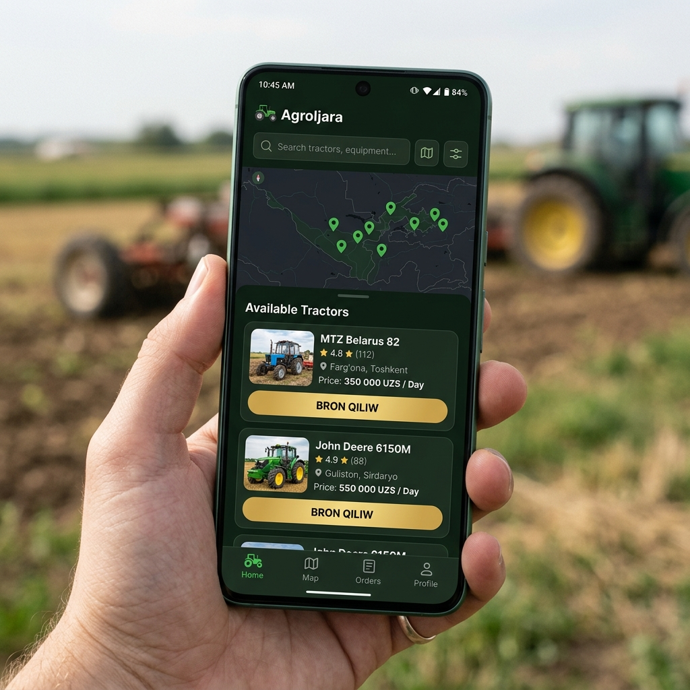

Ortasha Dellallıq Komissiyası (%)
Komissiyalardıń tómenligi esabınan AgroIjara.uz saytı eki tárepke de qosımsha tabıstı saqlap qalıwǵa hám tezirek til tabısıwǵa imkaniyat beredi.
Traktorlar hám awıl xojalığı texnikaların ańsat arendaǵa beriw hám onlayn bron qılıw saytınıń zamanagóy startap modeli.

Házirgi awıl xojalığı texnikasın arendaǵa alıwdaǵı hám beriwdegi qıyınshılıqlar
Máwsim qızǵan waqıtta traktor tabıw qıyın. Bahalar óte qımbat hám dástúriy dellallar (posredniklar) úlken ústeme haqı qosıp tabıp beredi. Sonıń menen birge, texnikanıń sapası hám kelesi kúni kelisiwine hesh kim kepillik bermeydi.
Qımbat bahalı traktorlar máwsimnen basqa waqıtlarda bos turadı. Traktorshılar kóbinese qarıydarlardı tek ǵana tanısları arqalı tabadı, bul bolsa texnikanıń ápiwayı toqtap qalıwına hám dáramattıń azayıwına alıp keledi.

AgroIjara.uz – bul traktor iyelerin hám olardı arendaǵa alıwshı fermerlerdi tikkeley baylanıstıratuǵın onlayn marketplace saytı.
Platformmamızdıń fermerler hám texnika iyelerine beretuǵın paydalı funktsiyaları
Fermerler óz kartasınan geolokaciya arqalı jaqındaǵı bar bolǵan traktor hám kombaynlardı dárriw tabadı.
Eki tárep arasında onlayn shártnamalar dúziledi hám buyırtpa tamamlanǵansha aqshalar kepillikte turadı.
Traktorshılardıń sapası, ádep-iybalılığı hám tezligine qaray fermerler bahalaydı hám basqalarǵa kórsetedi.
Ózbekstandan hám Qaraqalpaqstanda jańadan ashılıp atırǵan kishi fermer xojalıqlarınıń kópshiliginde jeke qımbat bahalı traktorlar joq.
Olar egin egiw hám jer aydaw máwsiminde pútkeley sırtqı arendaǵa baylanıslı boladı. AgroIjara.uz bul joqarı talaptı birden-bir oraylasqan sanlı baza arqalı qanaatlandırıp bólisedi.
Dástúriy dellallar hám bizniń platformmamızdıń tiykarǵı parametrler boyınsha salıstırılıwı
| Kórsetkishler | Dástúriy dellallar arqalı | AgroIjara.uz platformasında |
|---|---|---|
| Traktor tabıw tezligi | 1 kúnnen 3 kúnge shekem | 5-15 minut ishinde (onlayn) |
| Ortaǵı dellallıq haqı | Júdá joqarı (15% - 20% ke shekem) | Ápiwayı komissiya (3% - 5%) |
| Kelisim kepilligi | Tek ǵana awızeki (isni túsirmei ketiwi múmkin) | Yuridikalıq onlayn shártnama hám kepillik |
| Texnikanı tańlaw múmkinshiligi | Tek kórsetilgen bir-eki variant | Júzlegen traktor túrleri hám modeler |
Komissiyalardıń tómenligi esabınan AgroIjara.uz saytı eki tárepke de qosımsha tabıstı saqlap qalıwǵa hám tezirek til tabısıwǵa imkaniyat beredi.
Loyihaimizdiń rawajlanıw rejesi hám tiykarǵı muddetleri
Sayt prototipin islep shıǵıw hám awıllardaǵı iri traktor iyeleri menen dáslepki baylanıs.
Web-kodlaw, geolokaciya sistemaları, SMS tastıyıqlaw hám onlayn tólem bólizlerin integraciyalaw.
Bir kishi aymaqta (mısalı, Kegeyli yamasa Shimbayda) 30 traktor hám 50 fermer arasında test etiw.
Platformanı Qaraqalpaqstan hám tiykarǵı agrosenat kóp aymaqlarǵa keńeytiw, reklama hám marketing.
AgroIjara.uz – awıl xojalığı texnikasın arendaǵa beriwdegi zamanagóy hám eń ańsat onlayn sheshim!